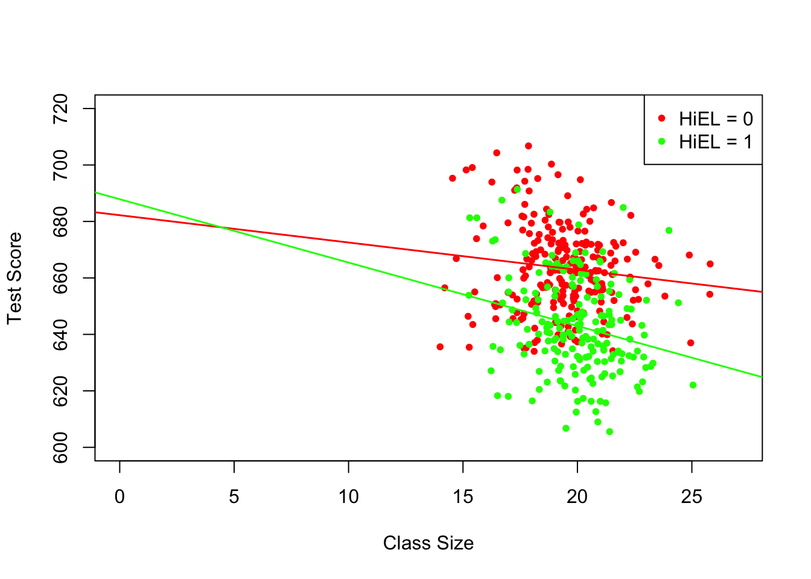

8.3 Interactions between Independent Variables
There are research questions where it is interesting to learn how the effect on \(Y\) of a change in an independent variable depends on the value of another independent variable. For example, we may ask if districts with many English learners benefit differentially from a decrease in class sizes to those with few English learning students. To assess this using a multiple regression model, we include an interaction term. We consider three cases:
Interactions between two binary variables.
Interactions between a binary and a continuous variable.
Interactions between two continuous variables.
The following subsections discuss these cases briefly and demonstrate how to perform such regressions in R.
Interactions Between Two Binary Variables
Take two binary variables \(D_1\) and \(D_2\) and the population regression model
\[ Y_i = \beta_0 + \beta_1 \times D_{1i} + \beta_2 \times D_{2i} + u_i. \]
Now assume that
\[\begin{align*} Y_i=& \, \ln(Earnings_i),\\ D_{1i} =& \, \begin{cases} 1 & \text{if $i^{th}$ person has a college degree,} \\ 0 & \text{else}. \end{cases} \\ D_{2i} =& \, \begin{cases} 1 & \text{if $i^{th}$ person is female,} \\ 0 & \text{if $i^{th}$ person is male}. \end{cases} \end{align*}\]
We know that \(\beta_1\) measures the average difference in \(\ln(Earnings)\) between individuals with and without a college degree and \(\beta_2\) is the gender differential in \(\ln(Earnings)\), ceteris paribus. This model does not allow us to determine if there is a gender specific effect of having a college degree and, if so, how strong this effect is. It is easy to come up with a model specification that allows to investigate this:
\[ Y_i = \beta_0 + \beta_1 \times D_{1i} + \beta_2 \times D_{2i} + \beta_3 \times (D_{1i} \times D_{2i}) + u_i, \]
\((D_{1i} \times D_{2i})\) is called an interaction term and \(\beta_3\) measures the difference in the effect of having a college degree for women versus men.
Key Concept 8.3
A Method for Interpreting Coefficients in Regression with Binary Variables
Compute expected values of \(Y\) for each possible set described by the set of binary variables. Compare the expected values. The coefficients can be expressed either as expected values or as the difference between at least two expected values.
Following Key Concept 8.3 we have
\[\begin{align*} E(Y_i\vert D_{1i}=0, D_{2i} = d_2) =& \, \beta_0 + \beta_1 \times 0 + \beta_2 \times d_2 + \beta_3 \times (0 \times d_2) \\ =& \, \beta_0 + \beta_2 \times d_2. \end{align*}\]
If \(D_{1i}\) switches from \(0\) to \(1\) we obtain
\[\begin{align*} E(Y_i\vert D_{1i}=1, D_{2i} = d_2) =& \, \beta_0 + \beta_1 \times 1 + \beta_2 \times d_2 + \beta_3 \times (1 \times d_2) \\ =& \, \beta_0 + \beta_1 + \beta_2 \times d_2 + \beta_3 \times d_2. \end{align*}\]
Hence, the overall effect is
\[ E(Y_i\vert D_{1i}=1, D_{2i} = d_2) - E(Y_i\vert D_{1i}=0, D_{2i} = d_2) = \beta_1 + \beta_3 \times d_2, \] so the effect is a difference of expected values.
Application to the Student-Teacher Ratio and the Percentage of English Learners
Now let
\[\begin{align*} HiSTR =& \, \begin{cases} 1, & \text{if $STR \geq 20$} \\ 0, & \text{else}, \end{cases} \\ \\ HiEL =& \, \begin{cases} 1, & \text{if $PctEL \geq 10$} \\ 0, & \text{else}. \end{cases} \end{align*}\]
We may use R to construct the variables above as follows.
# append HiSTR to CASchools
CASchools$HiSTR <- as.numeric(CASchools$size >= 20)
# append HiEL to CASchools
CASchools$HiEL <- as.numeric(CASchools$english >= 10)We proceed by estimating the model
\[\begin{align} TestScore = \beta_0 + \beta_1 \times HiSTR + \beta_2 \times HiEL + \beta_3 \times (HiSTR \times HiEL) + u_i. \tag{8.1} \end{align}\]
There are several ways to add the interaction term to the formula argument when using lm() but the most intuitive way is to use HiEL * HiSTR.7
# estimate the model with a binary interaction term
bi_model <- lm(score ~ HiSTR * HiEL, data = CASchools)
# print a robust summary of the coefficients
coeftest(bi_model, vcov. = vcovHC, type = "HC1")
#>
#> t test of coefficients:
#>
#> Estimate Std. Error t value Pr(>|t|)
#> (Intercept) 664.1433 1.3881 478.4589 < 2.2e-16 ***
#> HiSTR -1.9078 1.9322 -0.9874 0.3240
#> HiEL -18.3155 2.3340 -7.8472 3.634e-14 ***
#> HiSTR:HiEL -3.2601 3.1189 -1.0453 0.2965
#> ---
#> Signif. codes: 0 '***' 0.001 '**' 0.01 '*' 0.05 '.' 0.1 ' ' 1The estimated regression model is \[\widehat{TestScore} = \underset{(1.39)}{664.1} - \underset{(1.93)}{1.9} \times HiSTR - \underset{(2.33)}{18.3} \times HiEL - \underset{(3.12)}{3.3} \times (HiSTR \times HiEL),\] and it predicts that the effect of moving from a school district with a low student-teacher ratio to a district with a high student-teacher ratio, depending on high or low percentage of english learners is \(-1.9-3.3\times HiEL\). So for districts with a low share of english learners (\(HiEL = 0\)), the estimated effect is a decrease of \(1.9\) points in test scores while for districts with a large fraction of English learners (\(HiEL = 1\)), the predicted decrease in test scores amounts to \(1.9 + 3.3 = 5.2\) points.
We can also use the model to estimate the mean test score for each possible combination of the included binary variables.
# estimate means for all combinations of HiSTR and HiEL
# 1.
predict(bi_model, newdata = data.frame("HiSTR" = 0, "HiEL" = 0))
#> 1
#> 664.1433
# 2.
predict(bi_model, newdata = data.frame("HiSTR" = 0, "HiEL" = 1))
#> 1
#> 645.8278
# 3.
predict(bi_model, newdata = data.frame("HiSTR" = 1, "HiEL" = 0))
#> 1
#> 662.2354
# 4.
predict(bi_model, newdata = data.frame("HiSTR" = 1, "HiEL" = 1))
#> 1
#> 640.6598We now verify that these predictions are differences in the coefficient estimates presented in equation (8.1):
\[\begin{align*} \widehat{TestScore} = \hat\beta_0 = 664.1 \quad &\Leftrightarrow \quad HiSTR = 0, \, HIEL = 0.\\ \widehat{TestScore} = \hat\beta_0 + \hat\beta_2 = 664.1 - 18.3 = 645.8 \quad &\Leftrightarrow \quad HiSTR = 0, \, HIEL = 1.\\ \widehat{TestScore} = \hat\beta_0 + \hat\beta_1 = 664.1 - 1.9 = 662.2 \quad &\Leftrightarrow \quad HiSTR = 1, \, HIEL = 0.\\ \widehat{TestScore} = \hat\beta_0 + \hat\beta_1 + \hat\beta_2 + \hat\beta_3 = 664.1 - 1.9 - 18.3 - 3.3 = 640.6 \quad &\Leftrightarrow \quad HiSTR = 1, \, HIEL = 1. \end{align*}\]
Interactions Between a Continuous and a Binary Variable
Now let \(X_i\) denote the years of working experience of person \(i\), which is a continuous variable. We have \[\begin{align*} Y_i =& \, \ln(Earnings_i), \\ \\ X_i =& \, \text{working experience of person }i, \\ \\ D_i =& \, \begin{cases} 1, & \text{if $i^{th}$ person has a college degree} \\ 0, & \text{else}. \end{cases} \end{align*}\]
The baseline model thus is
\[ Y_i = \beta_0 + \beta_1 X_i + \beta_2 D_i + u_i, \]
a multiple regression model that allows us to estimate the average benefit of having a college degree holding working experience constant as well as the average effect on earnings of a change in working experience holding college degree constant.
By adding the interaction term \(X_i \times D_i\) we allow the effect of an additional year of work experience to differ between individuals with and without college degree,
\[ Y_i = \beta_0 + \beta_1 X_i + \beta_2 D_i + \beta_3 (X_i \times D_i) + u_i. \]
Here, \(\beta_3\) is the expected difference in the effect of an additional year of work experience for college graduates versus non-graduates. Another possible specification is
\[ Y_i = \beta_0 + \beta_1 X_i + \beta_2 (X_i \times D_i) + u_i. \]
This model states that the expected impact of an additional year of work experience on earnings differs for college graduates and non-graduates but that graduating on its own does not increase earnings.
All three regression functions can be visualized by straight lines. Key Concept 8.4 summarizes the differences.
Key Concept 8.4
Interactions Between Binary and Continuous Variables
An interaction term like \(X_i \times D_i\) (where \(X_i\) is continuous and \(D_i\) is binary) allows for the slope to depend on the binary variable \(D_i\). There are three possibilities:
Different intercept and same slope: \[ Y_i = \beta_0 + \beta_1 X_i + \beta_2 D_i + u_i . \]
Different intercept and different slope: \[ Y_i = \beta_0 + \beta_1 X_i + \beta_2 D_i + \beta_3 \times (X_i \times D_i) + u_i .\]
Same intercept and different slope: \[ Y_i = \beta_0 + \beta_1 X_i + \beta_2 (X_i \times D_i) + u_i . \]
The following code chunk demonstrates how to replicate the results shown in Figure 8.8 of the book using artificial data.
# generate artificial data
set.seed(1)
X <- runif(200,0, 15)
D <- sample(0:1, 200, replace = T)
Y <- 450 + 150 * X + 500 * D + 50 * (X * D) + rnorm(200, sd = 300)
# divide plotting area accordingly
m <- rbind(c(1, 2), c(3, 0))
graphics::layout(m)
# estimate the models and plot the regression lines
# 1. (baseline model)
plot(X, log(Y),
pch = 20,
col = "steelblue",
main = "Different Intercepts, Same Slope",
cex.main=1.2)
mod1_coef <- lm(log(Y) ~ X + D)$coefficients
abline(coef = c(mod1_coef[1], mod1_coef[2]),
col = "red",
lwd = 1.5)
abline(coef = c(mod1_coef[1] + mod1_coef[3], mod1_coef[2]),
col = "green",
lwd = 1.5)
# 2. (baseline model + interaction term)
plot(X, log(Y),
pch = 20,
col = "steelblue",
main = "Different Intercepts, Different Slopes",
cex.main=1.2)
mod2_coef <- lm(log(Y) ~ X + D + X:D)$coefficients
abline(coef = c(mod2_coef[1], mod2_coef[2]),
col = "red",
lwd = 1.5)
abline(coef = c(mod2_coef[1] + mod2_coef[3], mod2_coef[2] + mod2_coef[4]),
col = "green",
lwd = 1.5)
# 3. (omission of D as regressor + interaction term)
plot(X, log(Y),
pch = 20,
col = "steelblue",
main = "Same Intercept, Different Slopes",
cex.main=1.2)
mod3_coef <- lm(log(Y) ~ X + X:D)$coefficients
abline(coef = c(mod3_coef[1], mod3_coef[2]),
col = "red",
lwd = 2)
abline(coef = c(mod3_coef[1], mod3_coef[2] + mod3_coef[3]),
col = "green",
lwd = 2)
Application to the Student-Teacher Ratio and the Percentage of English Learners
Using a model specification like the second one discussed in Key Concept 8.3 (different slope, different intercept) we may answer the question whether the effect on test scores of decreasing the student-teacher ratio depends on whether there are many or few English learners. We estimate the regression model
\[ \widehat{TestScore_i} = \beta_0 + \beta_1 \times size_i + \beta_2 \times HiEL_i + \beta_2 (size_i \times HiEL_i) + u_i. \]
# estimate the model
bci_model <- lm(score ~ size + HiEL + size * HiEL, data = CASchools)
# print robust summary of coefficients to the console
coeftest(bci_model, vcov. = vcovHC, type = "HC1")
#>
#> t test of coefficients:
#>
#> Estimate Std. Error t value Pr(>|t|)
#> (Intercept) 682.24584 11.86781 57.4871 <2e-16 ***
#> size -0.96846 0.58910 -1.6440 0.1009
#> HiEL 5.63914 19.51456 0.2890 0.7727
#> size:HiEL -1.27661 0.96692 -1.3203 0.1875
#> ---
#> Signif. codes: 0 '***' 0.001 '**' 0.01 '*' 0.05 '.' 0.1 ' ' 1The estimated regression model is \[ \widehat{TestScore} = \underset{(11.87)}{682.2} - \underset{(0.59)}{0.97} \times size + \underset{(19.51)}{5.6} \times HiEL - \underset{(0.97)}{1.28} \times (size \times HiEL). \] The estimated regression line for districts with a low fraction of English learners (\(HiEL_i=0\)) is \[ \widehat{TestScore} = 682.2 - 0.97\times size_i. \]
For districts with a high fraction of English learners we have
\[\begin{align*} \widehat{TestScore} =& \, 682.2 + 5.6 - 0.97\times size_i - 1.28 \times size_i \\ =& \, 687.8 - 2.25 \times size_i. \end{align*}\]
The predicted increase in test scores following a reduction of the student-teacher ratio by \(1\) unit is about \(0.97\) points in districts where the fraction of English learners is low but \(2.25\) in districts with a high share of English learners. From the coefficient on the interaction term \(size \times HiEL\) we see that the difference between both effects is \(1.28\) points.
The next code chunk draws both lines belonging to the model. In order to make observations with \(HiEL = 0\) distinguishable from those with \(HiEL = 1\), we use different colors.
# identify observations with PctEL >= 10
id <- CASchools$english >= 10
# plot observations with HiEL = 0 as red dots
plot(CASchools$size[!id], CASchools$score[!id],
xlim = c(0, 27),
ylim = c(600, 720),
pch = 20,
col = "red",
main = "",
xlab = "Class Size",
ylab = "Test Score")
# plot observations with HiEL = 1 as green dots
points(CASchools$size[id], CASchools$score[id],
pch = 20,
col = "green")
# read out estimated coefficients of bci_model
coefs <- bci_model$coefficients
# draw the estimated regression line for HiEL = 0
abline(coef = c(coefs[1], coefs[2]),
col = "red",
lwd = 1.5)
# draw the estimated regression line for HiEL = 1
abline(coef = c(coefs[1] + coefs[3], coefs[2] + coefs[4]),
col = "green",
lwd = 1.5 )
# add a legend to the plot
legend("topleft",
pch = c(20, 20),
col = c("red", "green"),
legend = c("HiEL = 0", "HiEL = 1"))
Interactions Between Two Continuous Variables
Consider a regression model with \(Y\) the log earnings and two continuous regressors \(X_1\), the years of work experience, and \(X_2\), the years of schooling. We want to estimate the effect on wages of an additional year of work experience depending on a given level of schooling. This effect can be assessed by including the interaction term \((X_{1i} \times X_{2i})\) in the model:
\[ \Delta Y_i = \beta_0 + \beta_1 \times X_{1i} + \beta_2 \times X_{2i} + \beta_3 \times (X_{1i} \times X_{2i}) + u_i. \]
Following Key Concept 8.1, we find that the effect on \(Y\) for a change on \(X_1\) given \(X_2\) is \[ \frac{\Delta Y}{\Delta X_1} = \beta_1 + \beta_3 X_2. \]
In the earnings example, a positive \(\beta_3\) implies that the effect on log earnings of an additional year of work experience grows linearly with years of schooling. In reverse, we have \[ \frac{\Delta Y}{\Delta X_2} = \beta_2 + \beta_3 X_1 \] as the effect on log earnings of an additional year of schooling holding work experience constant.
Altogether we find that \(\beta_3\) measures the effect of a unit increase in \(X_1\) and \(X_2\) beyond the effects of increasing \(X_1\) alone and \(X_2\) alone by one unit. The overall change in \(Y\) is thus
\[\begin{align} Y_i = (\beta_1 + \beta_3 X_2) \Delta X_1 + (\beta_2 + \beta_3 X_1) \Delta X_2 + \beta_3\Delta X_1 \Delta X_2. \tag{8.2} \end{align}\]
Key Concept 8.5 summarizes interactions between two regressors in multiple regression.
Key Concept 8.5
Interactions in Multiple Regression
The interaction term between the two regressors \(X_1\) and \(X_2\) is given by their product \(X_1 \times X_2\). Adding this
interaction term as a regressor to the model \[ Y_i = \beta_0 + \beta_1 X_1 + \beta_2 X_2 + u_i \] allows the effect on \(Y\) of a change in \(X_2\) to depend on the value of \(X_1\) and vice versa. Thus the coefficient \(\beta_3\) in the model \[ Y_i = \beta_0 + \beta_1 X_1 + \beta_2 X_2 + \beta_3 (X_1 \times X_2) + u_i \] measures the effect of a one-unit increase in both \(X_1\)
8.3.0.1 Application to the Student-Teacher Ratio and the Percentage of English Learners
We now examine the interaction between the continuous variables student-teacher ratio and the percentage of English learners.
# estimate regression model including the interaction between 'PctEL' and 'size'
cci_model <- lm(score ~ size + english + english * size, data = CASchools)
# print a summary to the console
coeftest(cci_model, vcov. = vcovHC, type = "HC1")
#>
#> t test of coefficients:
#>
#> Estimate Std. Error t value Pr(>|t|)
#> (Intercept) 686.3385268 11.7593466 58.3654 < 2e-16 ***
#> size -1.1170184 0.5875136 -1.9013 0.05796 .
#> english -0.6729119 0.3741231 -1.7986 0.07280 .
#> size:english 0.0011618 0.0185357 0.0627 0.95005
#> ---
#> Signif. codes: 0 '***' 0.001 '**' 0.01 '*' 0.05 '.' 0.1 ' ' 1The estimated model equation is \[ \widehat{TestScore} = \underset{(11.76)}{686.3} - \underset{(0.59)}{1.12} \times STR - \underset{(0.37)}{0.67} \times PctEL + \underset{(0.02)}{0.0012} \times (STR\times PctEL). \]
For the interpretation, let us consider the quartiles of \(PctEL\).
summary(CASchools$english)
#> Min. 1st Qu. Median Mean 3rd Qu. Max.
#> 0.000 1.941 8.778 15.768 22.970 85.540According to (8.2), if \(PctEL\) is at its median value of \(8.78\), the slope of the regression function relating test scores and the student teacher ratio is predicted to be \(-1.12 + 0.0012 \times 8.78 = -1.11\). This means that increasing the student-teacher ratio by one unit is expected to deteriorate test scores by \(1.11\) points. For the \(75\%\) quantile, the estimated change on \(TestScore\) of a one-unit increase in \(STR\) is estimated by \(-1.12 + 0.0012 \times 23.0 = -1.09\) so the slope is somewhat lower. The interpretation is that for a school district with a share of \(23\%\) English learners, a reduction of the student-teacher ratio by one unit is expected to increase test scores by only \(1.09\) points.
However, the output of coeftest() indicates that the difference of the effect for the median and the \(75\%\) quantile is not statistically significant. \(H_0: \beta_3 = 0\) cannot be rejected at the \(5\%\) level of significance (the \(p\)-value is \(0.95\)).
Example: The Demand for Economic Journals
In this section we replicate the empirical example presented on pages 336 - 337 of the book. The central question is: how elastic is the demand by libraries for economic journals? The idea here is to analyze the relationship between the number of subscriptions to a journal at U.S. libraries and the journal’s subscription price. The study uses the data set Journals which is provided with the AER package and contains observations for \(180\) economic journals for the year 2000. You can use the help function (?Journals) to get more information on the data after loading the package.
We measure the price as “price per citation” and compute journal age and the number of characters manually. For consistency with the book we also rename the variables.
# define and rename variables
Journals$PricePerCitation <- Journals$price/Journals$citations
Journals$Age <- 2000 - Journals$foundingyear
Journals$Characters <- Journals$charpp * Journals$pages/10^6
Journals$Subscriptions <- Journals$subsThe range of “price per citation” is quite large:
# compute summary statistics for price per citation
summary(Journals$PricePerCitation)
#> Min. 1st Qu. Median Mean 3rd Qu. Max.
#> 0.005223 0.464495 1.320513 2.548455 3.440171 24.459459The lowest price observed is a mere \(0.5\)¢ per citation while the highest price is more than \(20\)¢ per citation.
We now estimate four different model specifications. All models are log-log models. This is useful because it allows us to directly interpret the coefficients as elasticities, see Key Concept 8.2. \((I)\) is a linear model. To alleviate a possible omitted variable bias, \((II)\) augments \((I)\) by the covariates \(\ln(Age)\) and \(\ln(Characters)\). The largest model \((III)\) attempts to capture nonlinearities in the relationship of \(\ln(Subscriptions)\) and \(\ln(PricePerCitation)\) using a cubic regression function of \(\ln(PricePerCitation)\) and also adds the interaction term \((PricePerCitation \times Age)\) while specification \((IV)\) does not include the cubic term.
\[\begin{align*} (I)\quad \ln(Subscriptions_i) =& \, \beta_0 + \beta_1 \ln(PricePerCitation_i) + u_i .\\ \\ (II)\quad \ln(Subscriptions_i) =& \, \beta_0 + \beta_1 \ln(PricePerCitation_i) + \beta_4 \ln(Age_i) + \beta_6 \ln(Characters_i) + u_i .\\ \\ (III)\quad \ln(Subscriptions_i) =& \, \beta_0 + \beta_1 \ln(PricePerCitation_i) + \beta_2 \ln(PricePerCitation_i)^2 \\ +& \, \beta_3 \ln(PricePerCitation_i)^3 + \beta_4 \ln(Age_i)\\ +& \, \beta_5 [\ln(Age_i) \times \ln(PricePerCitation_i)] + \beta_6 \ln(Characters_i) + u_i . \\ \\ (IV)\quad \ln(Subscriptions_i) =& \, \beta_0 + \beta_1 \ln(PricePerCitation_i) + \beta_4 \ln(Age_i)\\ +& \, \beta_5 [\ln(Age_i) \times \ln(PricePerCitation_i)] + \beta_6 \ln(Characters_i) + u_i . \end{align*}\]
# Estimate models (I) - (IV)
J_mod1 <- lm(log(Subscriptions) ~ log(PricePerCitation),
data = Journals)
J_mod2 <- lm(log(Subscriptions) ~ log(PricePerCitation)
+ log(Age) + log(Characters),
data = Journals)
J_mod3 <- lm(log(Subscriptions) ~
log(PricePerCitation) + I(log(PricePerCitation)^2)
+ I(log(PricePerCitation)^3) + log(Age)
+ log(Age):log(PricePerCitation) + log(Characters),
data = Journals)
J_mod4 <- lm(log(Subscriptions) ~
log(PricePerCitation) + log(Age)
+ log(Age):log(PricePerCitation) +
log(Characters),
data = Journals)Using summary(), we obtain the following estimated models:
\[\begin{align*} (I)\quad \widehat{\ln(Subscriptions_i)} =& \, 4.77 - 0.53 \ln(PricePerCitation_i) \\ \\ (II)\quad \widehat{\ln(Subscriptions_i)} =& \, 3.21 - 0.41 \ln(PricePerCitation_i) + 0.42 \ln(Age_i) + 0.21 \ln(Characters_i) \\ \\ (III)\quad \widehat{\ln(Subscriptions_i)} =& \, 3.41 - 0.96 \ln(PricePerCitation_i) + 0.02 \ln(PricePerCitation_i)^2 \\ +& \, 0.004 \ln(PricePerCitation_i)^3 + 0.37 \ln(Age_i) \\ +& \, 0.16 \left[\ln(Age_i) \times \ln(PricePerCitation_i)\right] \\ +& \, 0.23 \ln(Characters_i) \\ \\ (IV)\quad \widehat{\ln(Subscriptions_i)} =& \, 3.43 - 0.90 \ln(PricePerCitation_i) + 0.37 \ln(Age_i) \\ +& \, 0.14 \left[\ln(Age_i) \times \ln(PricePerCitation_i)\right] + 0.23 \ln(Characters_i) \end{align*}\]
We use an \(F\)-Test to test if the transformations of \(\ln(PricePerCitation)\) in Model \((III)\) are statistically significant.
# F-Test for significance of cubic terms
linearHypothesis(J_mod3,
c("I(log(PricePerCitation)^2)=0", "I(log(PricePerCitation)^3)=0"),
vcov. = vcovHC, type = "HC1")
#> Linear hypothesis test
#>
#> Hypothesis:
#> I(log(PricePerCitation)^2) = 0
#> I(log(PricePerCitation)^3) = 0
#>
#> Model 1: restricted model
#> Model 2: log(Subscriptions) ~ log(PricePerCitation) + I(log(PricePerCitation)^2) +
#> I(log(PricePerCitation)^3) + log(Age) + log(Age):log(PricePerCitation) +
#> log(Characters)
#>
#> Note: Coefficient covariance matrix supplied.
#>
#> Res.Df Df F Pr(>F)
#> 1 175
#> 2 173 2 0.1943 0.8236Clearly, we cannot reject the null hypothesis \(H_0: \beta_3=\beta_4=0\) in model \((III)\).
We now demonstrate how the function stargazer() can be used to generate a tabular representation of all four models.
# load the stargazer package
library(stargazer)
# gather robust standard errors in a list
rob_se <- list(sqrt(diag(vcovHC(J_mod1, type = "HC1"))),
sqrt(diag(vcovHC(J_mod2, type = "HC1"))),
sqrt(diag(vcovHC(J_mod3, type = "HC1"))),
sqrt(diag(vcovHC(J_mod4, type = "HC1"))))
# generate a Latex table using stargazer
stargazer(J_mod1, J_mod2, J_mod3, J_mod4,
se = rob_se,
digits = 3,
column.labels = c("(I)", "(II)", "(III)", "(IV)"))| Dependent Variable: Logarithm of Subscriptions | ||||
| log(Subscriptions) | ||||
| (I) | (II) | (III) | (IV) | |
| log(PricePerCitation) | -0.533*** | -0.408*** | -0.961*** | -0.899*** |
| (0.034) | (0.044) | (0.160) | (0.145) | |
| I(log(PricePerCitation)2) | 0.017 | |||
| (0.025) | ||||
| I(log(PricePerCitation)3) | 0.004 | |||
| (0.006) | ||||
| log(Age) | 0.424*** | 0.373*** | 0.374*** | |
| (0.119) | (0.118) | (0.118) | ||
| log(Characters) | 0.206** | 0.235** | 0.229** | |
| (0.098) | (0.098) | (0.096) | ||
| log(PricePerCitation):log(Age) | 0.156*** | 0.141*** | ||
| (0.052) | (0.040) | |||
| Constant | 4.766*** | 3.207*** | 3.408*** | 3.434*** |
| (0.055) | (0.380) | (0.374) | (0.367) | |
| Observations | 180 | 180 | 180 | 180 |
| R2 | 0.557 | 0.613 | 0.635 | 0.634 |
| Adjusted R2 | 0.555 | 0.607 | 0.622 | 0.626 |
| Residual Std. Error | 0.750 (df = 178) | 0.705 (df = 176) | 0.691 (df = 173) | 0.688 (df = 175) |
| F Statistic | 224.037*** (df = 1; 178) | 93.009*** (df = 3; 176) | 50.149*** (df = 6; 173) | 75.749*** (df = 4; 175) |
| Note: | *p<0.1; **p<0.05; ***p<0.01 | |||
Table 8.1: Nonlinear Regression Models of Journal Subscribtions
The subsequent code chunk reproduces Figure 8.9 of the book.
# divide plotting area
m <- rbind(c(1, 2), c(3, 0))
graphics::layout(m)
# scatterplot
plot(Journals$PricePerCitation,
Journals$Subscriptions,
pch = 20,
col = "steelblue",
ylab = "Subscriptions",
xlab = "Price per citation",
main = "(a)")
# log-log scatterplot and estimated regression line (I)
plot(log(Journals$PricePerCitation),
log(Journals$Subscriptions),
pch = 20,
col = "steelblue",
ylab = "ln(Subscriptions)",
xlab = "ln(Price per citation)",
main = "(b)")
abline(J_mod1,
lwd = 1.5)
# log-log scatterplot and regression lines (IV) for Age = 5 and Age = 80
plot(log(Journals$PricePerCitation),
log(Journals$Subscriptions),
pch = 20,
col = "steelblue",
ylab = "ln(Subscriptions)",
xlab = "ln(Price per citation)",
main = "(c)")
JM4C <-J_mod4$coefficients
# Age = 80
abline(coef = c(JM4C[1] + JM4C[3] * log(80),
JM4C[2] + JM4C[5] * log(80)),
col = "darkred",
lwd = 1.5)
# Age = 5
abline(coef = c(JM4C[1] + JM4C[3] * log(5),
JM4C[2] + JM4C[5] * log(5)),
col = "darkgreen",
lwd = 1.5)
As can be seen from plots (a) and (b), the relation between subscriptions and the citation price is adverse and nonlinear. Log-transforming both variables makes it approximately linear. Plot (c) shows that the price elasticity of journal subscriptions depends on the journal’s age: the red line shows the estimated relationship for \(Age=80\) while the green line represents the prediction from model \((IV)\) for \(Age=5\).
Which conclusion can be drawn?
We conclude that the demand for journals is more elastic for young journals than for old journals.
For model \((III)\) we cannot reject the null hypothesis that the coefficients on \(\ln(PricePerCitation)^2\) and \(\ln(PricePerCitation)^3\) are both zero using an \(F\)-test. This is evidence compatible with a linear relation between log-subscriptions and log-price.
Demand is greater for Journals with more characters, holding price and age constant.
Altogether our estimates suggest that the demand is very inelastic, i.e., the libraries’ demand for economic journals is quite insensitive to the price: using model \((IV)\), even for a young journal (\(Age=5\)) we estimate the price elasticity to be \(-0.899+0.374\times\ln(5)+0.141\times\left[\ln(1)\times\ln(5)\right] \approx -0.3\) so a one percent increase in price is predicted to reduce the demand by only \(0.3\) percent.
This finding comes at no surprise since providing the most recent publications is a necessity for libraries.
Appending HiEL * HiSTR to the formula will add HiEL, HiSTR and their interaction as regressors while HiEL:HiSTR only adds the interaction term.↩︎